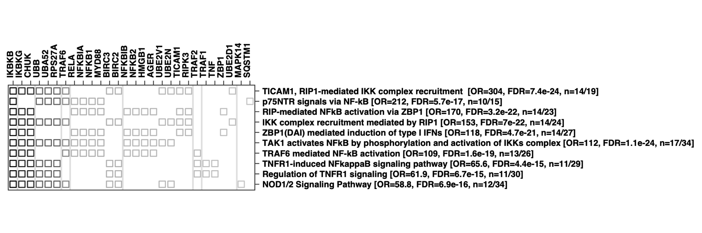

Section 3 List of prioritised pathways
The top ranked targets (~150) were highly enriched for genes involved in TRAF6- or TNFR1-induced NF-kappa B activation, including BIRC2/3, IKBKB/G, NFKB1/2, NFKBIA/B, TRAF1/2/6, MYD88 and TNF.

Pathways and their gene members can be explored below.